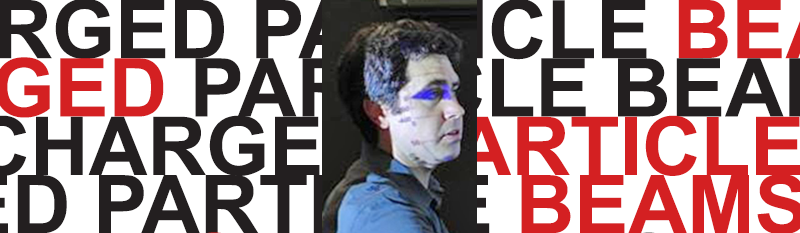
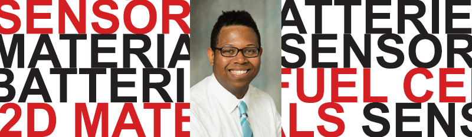
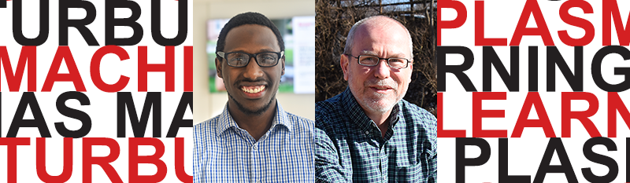
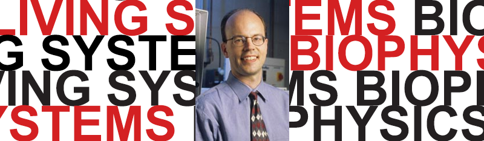
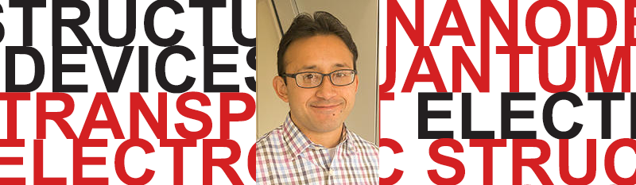
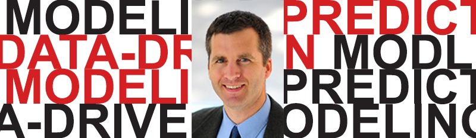
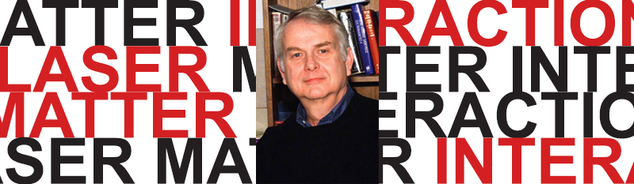
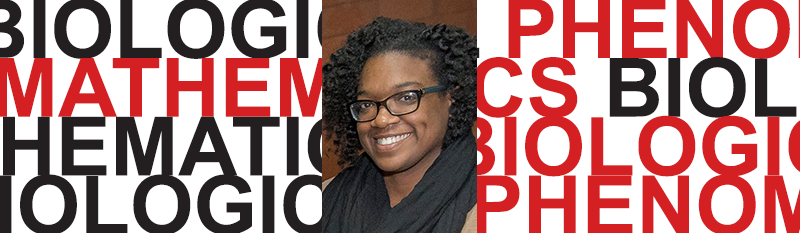

🌀 Theoretical and Computational Studies of Emergence in Nonlinear Systems
Tom Antonsen, Michelle Girvan, Ed Ott
(Computation and Theory)
💫 Nonlinear Dynamics in Charged Particle Beam Systems

Brian Beaudoin
(Computation and Experiments)
✴ Time-Delayed Nonlinear Oscillators and Synchronization Patterns in Optoelectronic Networks
Yanne Chembo, Tom Murphy, Rajarshi Roy
(Computation and Experiments)
🧩 Nonlinear Behaviors of 2D Materials for Environmental and Biological Sensors, Batteries, and Fuel Cells

Kevin Daniels
(Experiments)
🌞🔀🌏 Theoretical and Computational Studies of Magnetic Reconnection and the Dynamics of Energetic Particles

Jim Drake, Marc Swisdak
(Computation and Theory)
🌪 Turbulence, Flows, Plasmas, and Machine Learning

Landry Horimbere, Dan Lathrop
(Computation and Experiments)
🔬 Dynamics of Living Systems

Wolfgang Losert
(Computation and Experiments)
💠 Transport properties and electronic structure of silicon nanodevices with multiple quantum dots

Maicol Ochoa
(Computation and Theory))
🐠 Modeling the Dynamics of Underwater Robots

Derek Paley
(Computation and Experiments)
✨ Nonlinear Dynamics of Photonic Systems

Carlos RÃos Ocampo
(Experiments)
✳ Nonlinear Laser Matter Interactions

Phil Sprangle
(Theory)
🧬 Mathematical Biology: Dynamics of Cell Migration, Population Interaction Models
Konstantina Trivisa
(Computation and Theory)
🦠 Mathematical Biology: COVID-19 Dynamics and Other Population Dynamic Cycles

Shelby Wilson
(Computation and Theory)